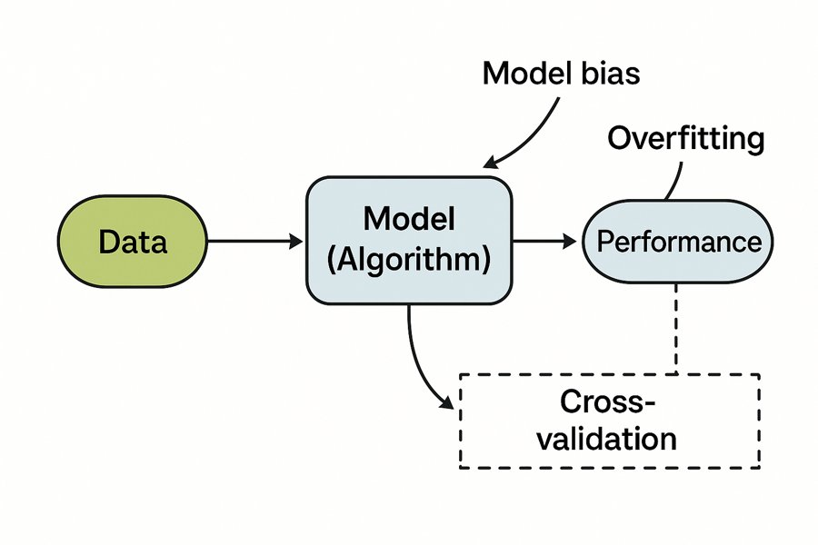

| Paciente | Observado | Previsto | Erro | Erro absoluto | Erro ao quadrado |
|---|---|---|---|---|---|
| 1 | 20 | 18 | 2 | 2 | 4 |
| 2 | 35 | 38 | -3 | 3 | 9 |
| 3 | 40 | 37 | 3 | 3 | 9 |
| 4 | 60 | 65 | -5 | 5 | 25 |
| 5 | 75 | 71 | 4 | 4 | 16 |
| 6 | 85 | 89 | -4 | 4 | 16 |
| 7 | 95 | 92 | 3 | 3 | 9 |
| 8 | 100 | 102 | -2 | 2 | 4 |
3 Aprendendo com os dados: o fluxo de trabalho
Uma equipe está construindo um modelo da variação da creatinina em 48 horas na UTI Ala 7. Onde cada item se encaixa? Arrisque seu melhor palpite: o capítulo explica cada termo.
| Item | Seu rótulo |
|---|---|
| 800 pacientes anteriores cujos prontuários são usados para estimar o intercepto e a inclinação de uma reta. | |
| Outros 200 pacientes anteriores, usados para decidir se um modelo com 5 ou com 50 vizinhos funciona melhor. | |
| 250 pacientes anteriores guardados a sete chaves e usados uma única vez, bem no final, para relatar o erro esperado. | |
| Aoife, Tomás e Priya, os pacientes desta noite, cuja variação da creatinina ninguém conhece ainda. | |
| A creatinina de cada paciente medida 24 horas após a internação, usada como preditor da variação em 48 horas. |
Como usar este capítulo
Começando por aqui?
Este capítulo se apoia em algumas ideias do Capítulo 1.
- Um conjunto de dados tem \(n\) instâncias (linhas; aqui, pacientes), preditores \(\mathbf{x}_i\) e um desfecho \(y_i\) (Definição 1.7). Um modelo estima a relação desconhecida \(y = f(\mathbf{x}) + \varepsilon\); sua predição é \(\hat y = \hat f(\mathbf{x})\) (Definição 1.3).
- O fluxo preditivo ajusta um modelo em um conjunto de treino, verifica-o em um conjunto de teste que ele nunca viu e só então o implanta para pacientes novos (Seção 1.8).
- Um modelo rígido demais tem viés alto (fica subajustado); um flexível demais tem variância alta e sofre sobreajuste: excelente nos dados de treino, fraco em dados novos (Definição 1.8).
- A validação cruzada com \(V\) partições faz uma partição separada circular pelos dados de treino para estimar o erro em dados novos sem tocar no conjunto de teste (Definição 1.9).
- Uma predição serve a uma decisão; na UTI Ala 7, a pergunta é se devemos iniciar um pacote de proteção renal, e um aumento da creatinina de pelo menos 0,3 mg/dL em 48 horas define a lesão renal aguda (LRA) (Seção 1.5).
| Exemplo | Quem ou o quê | Desfecho | Rostos que você vai conhecer |
|---|---|---|---|
| 1 UTI Ala 7 | 1.250 pacientes de UTI em 4 hospitais | variação da creatinina em 48 h (lesão renal aguda se ≥ 0,3 mg/dL) | Aoife (71 anos, sepse, risco limítrofe), Tomás (54 anos, risco baixo), Priya (38 anos, risco alto); a Dra. Emma Walsh; Seán, o farmacêutico |
| 2 Ensaio ONCO-1 | 1.000 pacientes randomizados para quimioterapia ou não | redução do tumor (%) | pacientes #0042 e #0917 |
| 3 HomeBeat | 500 pessoas que usam um relógio inteligente em casa | escore de estresse, evento de deterioração | Lena |
| 4 CellWorks | 420 lotes de produção de uma terapia celular | escore de potência | lote CW-118 |
Os quatro conjuntos de dados são simulados e podem ser baixados no apêndice de dados. A apresentação completa está na Seção 1.1.
O Capítulo 1 esboçou o fluxo; este capítulo o transforma em uma rotina de trabalho que todos os modelos do restante do livro seguem. Ele tem nove seções e um Lab, sete verificações rápidas, três widgets “Experimente”, um desafio e três missões de programação em R e Python. Reserve cerca de 90 minutos. A única matemática nova é um punhado de médias, apresentadas uma de cada vez.
Notação em resumo (apenas para consulta)
| Símbolo | Significado | Seção |
|---|---|---|
| \(e_i = y_i - \hat y_i\) | erro de predição da instância \(i\) | Seção 3.3 |
| MAE, MSE, RMSE | erro absoluto médio, erro quadrático médio, raiz do erro quadrático médio | Seção 3.3 |
| \(R^2\) | proporção do erro quadrático da referência eliminada pelo modelo | Seção 3.3 |
| \(\mathcal{L}(y, \hat y)\) | perda: a penalidade por prever \(\hat y\) quando o valor real é \(y\) | Seção 3.3 |
| \(V\), \(v\) | número de partições da validação cruzada, índice de uma partição | Seção 3.5 |
| \(k\) | número de vizinhos no método dos \(k\) vizinhos mais próximos | Seção 3.7 |
| \(N_k(\mathbf{x})\) | as \(k\) instâncias de treino mais próximas de \(\mathbf{x}\) | Seção 3.7 |
A lista completa está na página de notação.
3.1 O fluxo de trabalho em resumo
O Capítulo 1 descreveu todo método de aprendizado com a mesma anatomia: os dados entram em um algoritmo, que produz um modelo cujo desempenho medimos. A Figura 3.1 acrescenta as três ideias que decidem se esse desempenho medido merece confiança. O viés do modelo está ligado ao algoritmo: seus pressupostos podem ser rígidos demais para os dados. O sobreajuste está ligado ao desempenho: um modelo pode parecer excelente nos pacientes com que aprendeu e decepcionar com todos os outros. E a validação cruzada liga os dois: é o procedimento que nos diz, antes da implantação, como o modelo provavelmente vai se sair com pacientes que não viu.

Na prática, o fluxo de trabalho tem seis etapas (Kuhn e Johnson 2013; Hastie, Tibshirani, e Friedman 2009, cap. 7), e o restante do capítulo as percorre uma a uma:
- Dividir os dados em um conjunto de treino e um conjunto de teste, e guardar o conjunto de teste a sete chaves (Seção 3.2).
- Escolher uma métrica que reflita o custo de um erro (Seção 3.3).
- Ajustar uma referência: a predição sensata mais simples, que todo modelo precisa superar (Seção 3.4).
- Estimar o desempenho com validação cruzada no conjunto de treino (Seção 3.5), verificando a cada etapa que nenhuma informação vaze dos dados de avaliação para o modelo (Seção 3.6).
- Sintonizar as configurações do modelo, seus hiperparâmetros, com validação cruzada; nosso primeiro método flexível, o dos \(k\) vizinhos mais próximos, tem um (Seção 3.7, Seção 3.8).
- Abrir o conjunto de teste uma única vez, relatar o erro e só então implantar.
3.2 Conjuntos de treino, validação e teste
Um modelo só é útil se generaliza: se prevê bem para pacientes que não foram usados para construí-lo. Como os pacientes de amanhã não estão disponíveis hoje, nós os imitamos separando alguns dos pacientes de hoje.
Definição 3.1 (Conjuntos de treino, validação e teste) O conjunto de treino é a parte dos dados usada para ajustar um modelo, isto é, para estimar seus parâmetros. O conjunto de validação é usado para comparar modelos ou configurações candidatos e escolher entre eles. O conjunto de teste é mantido à parte até que todas as escolhas tenham sido feitas e é usado uma única vez, para estimar como o modelo escolhido vai se sair em dados novos. Um modelo generaliza quando seu erro em dados novos é próximo do erro nos dados em que foi treinado. Na validação cruzada, os conjuntos de validação são recortados do conjunto de treino, um de cada vez, de modo que não é preciso um conjunto de validação separado.
Por que três papéis, e não dois? Porque, toda vez que olhamos para um conjunto de pacientes para fazer uma escolha, esse conjunto deixa de ser um juiz honesto dessa escolha. O Capítulo 1 mostrou isso com o widget do polinômio: escolher o grau com o menor erro de teste deixou esse erro de teste otimista demais. Um aluno que refaz o mesmo simulado até passar aprendeu o simulado; a prova de verdade precisa ser uma que ele ainda não viu (James et al. 2021, cap. 5; Hastie, Tibshirani, e Friedman 2009, cap. 7).
Para a UTI Ala 7, o livro usa uma divisão fixa, armazenada em data/splits/ward7_split.csv e criada por um script com semente fixa (Figura 3.2). Dos 1.250 pacientes anteriores, 1000 formam o conjunto de treino, dividido aleatoriamente em cinco partições de 200 para a validação cruzada, e 250 formam o conjunto de teste. A proporção de pacientes que preencheram o critério de LRA é parecida nas duas partes (58 % no treino, 59 % no teste), como se espera de uma divisão aleatória. Todos os modelos da Parte II são ajustados nos mesmos 1.000 pacientes e julgados nos mesmos 250, para que seus erros possam ser comparados de forma justa de um capítulo para outro. O ONCO-1 tem a sua própria divisão fixa (800 de treino, 200 de teste) em data/splits/onco1_split.csv.
Uma divisão aleatória responde a uma pergunta restrita: o quanto o modelo se sai bem com mais pacientes como estes, dos mesmos hospitais e do mesmo período? Um clínico que decide se confia numa ferramenta precisa de mais. A validação temporal testa em pacientes tratados depois dos pacientes de treino; a validação interna-externa deixa de fora um hospital de cada vez; a validação externa testa em um contexto totalmente diferente, de preferência por uma equipe independente (Steyerberg e Harrell 2016; Steyerberg 2019). As diretrizes de relato para modelos de predição clínica pedem que os autores digam exatamente qual dessas validações foi feita (Collins et al. 2015). A diferença não é acadêmica: um modelo de aprendizado profundo para pneumonia em radiografias de tórax teve bom desempenho em imagens novas dos hospitais em que foi treinado e pior desempenho em outro sistema hospitalar; o mesmo tipo de rede também conseguia dizer de qual sistema hospitalar vinha uma imagem, um atalho que não se transfere (Zech et al. 2018). Testado nos pacientes de quem? é sempre uma pergunta justa; nós a fazemos ao nosso próprio modelo da UTI Ala 7 na Seção 3.8.
Uma equipe compara dez modelos no conjunto de teste da UTI Ala 7, escolhe o que tem o menor erro de teste e relata esse erro no seu artigo. O que está errado?
3.3 Medindo o erro: métricas para regressão
Antes de comparar modelos, precisamos combinar como pontuá-los. Quando o desfecho é um número, como a variação da creatinina na UTI Ala 7 ou a redução do tumor no ONCO-1, a tarefa se chama regressão e as pontuações são construídas a partir dos erros de predição individuais. Cada métrica capta um aspecto diferente do desempenho, e a escolha deve refletir quanto custa, na prática, uma predição errada.
O erro da instância \(i\) é a diferença entre o que aconteceu e o que foi previsto,
\[ e_i = y_i - \hat y_i , \qquad(3.1)\]
de modo que um erro positivo significa que o modelo subestimou e um erro negativo significa que ele superestimou. (Alguns textos definem o erro ao contrário, \(\hat y_i - y_i\); só o sinal muda. Usamos \(y_i - \hat y_i\) em todo o livro, a mesma convenção dos resíduos do Capítulo 4.)
A Tabela 3.1 acompanha oito pacientes de um ensaio de quimioterapia, cuja redução observada do tumor é comparada com a predição de um modelo.
O erro absoluto médio faz a média do tamanho dos erros, ignorando o sinal:
\[ \text{MAE} = \frac{1}{n}\sum_{i=1}^{n} \lvert y_i - \hat y_i \rvert . \qquad(3.2)\]
Cada erro conta na proporção do seu tamanho. Na Tabela 3.1, MAE = 26 / 8 = 3,25: em média, as predições ficam a 3,25 pontos percentuais da redução observada.
O erro quadrático médio faz a média dos erros ao quadrado:
\[ \text{MSE} = \frac{1}{n}\sum_{i=1}^{n} (y_i - \hat y_i)^2 . \qquad(3.3)\]
Elevar ao quadrado penaliza os erros grandes muito mais do que os pequenos: um erro de 4 contribui com 16, um erro de 8 contribui com 64. Isso é útil quando um erro grande custa desproporcionalmente caro, por exemplo ao subestimar o nível de um fármaco tóxico. Aqui, MSE = 92 / 8 = 11,50, em pontos percentuais ao quadrado, uma unidade que ninguém consegue visualizar. A raiz do erro quadrático médio volta às unidades do desfecho:
\[ \text{RMSE} = \sqrt{\text{MSE}} = \sqrt{\frac{1}{n}\sum_{i=1}^{n} (y_i - \hat y_i)^2} . \qquad(3.4)\]
Aqui, RMSE = 3,39 pontos percentuais. A RMSE nunca é menor que o MAE, e a diferença entre os dois cresce quando alguns erros são muito maiores que o resto.
| Métrica | Fórmula | Penaliza fortemente os erros grandes? | Unidades | Significado prático |
|---|---|---|---|---|
| Erro | \(e_i = y_i - \hat y_i\) | (um paciente) | unidades do desfecho | direção e tamanho de um erro |
| MAE | \(\frac{1}{n}\sum \lvert e_i \rvert\) | não (linear) | unidades do desfecho | tamanho típico de um erro |
| MSE | \(\frac{1}{n}\sum e_i^2\) | sim (quadrática) | unidades ao quadrado | erro quadrático médio; conveniente para o ajuste |
| RMSE | \(\sqrt{\frac{1}{n}\sum e_i^2}\) | sim (quadrática) | unidades do desfecho | erro típico, com mais peso para os erros grandes |
As métricas de erro têm um ponto fraco: seu tamanho depende das unidades e da variabilidade do desfecho. Um MAE de 0,18 mg/dL só é bom ou ruim em comparação com alguma coisa. O coeficiente de determinação (James et al. 2021, cap. 3) torna essa comparação explícita. Ele compara os erros quadráticos do modelo com os da predição mais simples possível, o desfecho médio \(\bar y\):
\[ R^2 = 1 - \frac{\sum_{i} (y_i - \hat y_i)^2}{\sum_{i} (y_i - \bar y)^2} . \qquad(3.5)\]
Um \(R^2\) de 0,6 significa que o modelo elimina 60 % do erro quadrático que se cometeria prevendo a média para todos. Em dados novos, o \(R^2\) pode até ser negativo: o modelo é então pior que a média. (Quando o \(R^2\) é calculado em um conjunto de teste, \(\bar y\) deve ser a média dos desfechos de treino, a única média disponível quando o modelo foi construído.)
Definição 3.2 (Métricas de regressão) Para predições \(\hat y_i\) de desfechos numéricos \(y_i\), o erro absoluto médio (MAE, do inglês mean absolute error) é a média de \(\lvert y_i - \hat y_i\rvert\); o erro quadrático médio (MSE) é a média de \((y_i - \hat y_i)^2\); a raiz do erro quadrático médio (RMSE) é a raiz quadrada do MSE, nas unidades do desfecho; e o coeficiente de determinação \(R^2\) é um menos a razão entre o erro quadrático do modelo e o erro quadrático de prever a média. As métricas são calculadas em dados que o modelo não viu.
Uma parente próxima da métrica é a perda. A perda \(\mathcal{L}(y, \hat y)\) é a penalidade por prever \(\hat y\) quando o valor real é \(y\): por exemplo, a perda quadrática \((y - \hat y)^2\) ou a perda absoluta \(\lvert y - \hat y \rvert\). Ajustar um modelo significa tornar a perda média nos dados de treino tão pequena quanto possível; essa é a etapa de “correção” do ciclo de aprendizado do Capítulo 1. Avaliar um modelo significa calcular uma métrica em dados novos. Muitas vezes as duas coincidem (o ajuste por mínimos quadrados minimiza o MSE), mas não precisam coincidir: um modelo pode ser ajustado com perda quadrática e relatado com o MAE (Hastie, Tibshirani, e Friedman 2009, cap. 2).
Um erro grave. Estes são os oito pacientes da Tabela 3.1. Mova o controle deslizante para mudar o erro do paciente 8 e observe as três métricas. Meta: fazer a RMSE ser pelo menos 1,5 vez o MAE.
Qual métrica relatar? Três regras práticas, seguindo as notas da v1 e a literatura:
- Use o MAE quando quiser um tamanho médio de erro intuitivo, que não seja dominado por alguns casos extremos (Willmott e Matsuura 2005).
- Use a RMSE quando os erros grandes forem desproporcionalmente danosos, e lembre-se de que ela é sensível a valores atípicos.
- Relate mais de uma (por exemplo, MAE e RMSE, além do \(R^2\) em relação à média) e calcule-as sempre em dados que o modelo não viu: em um conjunto de teste ou com validação cruzada.
Por trás das três regras está a pergunta do Capítulo 1: a que decisão a predição serve? Se a equipe age quando o aumento previsto ultrapassa 0,3 mg/dL, um erro de 0,1 que empurra um paciente para o outro lado do limiar importa mais do que um erro de 0,3 para um paciente longe dele. As métricas que pesam os erros pelas suas consequências para a decisão chegam no Capítulo 5.
Dois modelos preveem a variação da creatinina em 48 horas para os mesmos 250 pacientes de teste. O modelo A tem MAE 0,17 e RMSE 0,22; o modelo B tem MAE 0,18 e RMSE 0,33. O que isso sugere?
Pontue o exemplo resolvido. Os erros da Tabela 3.1 já estão calculados. O MAE já está pronto; complete a RMSE preenchendo a lacuna com a função que desfaz o quadrado.
A função que calcula a raiz quadrada no R é sqrt().
c(MAE = mean(abs(errors)), RMSE = sqrt(mean(errors^2)))A função de raiz quadrada do NumPy é np.sqrt().
{"MAE": np.mean(np.abs(errors)), "RMSE": np.sqrt(np.mean(errors ** 2))}3.4 Modelos de referência: o que um modelo precisa superar?
O folheto sobre a mesa de Emma relata um erro, mas não o erro de nenhuma alternativa. Sem um ponto de referência, uma métrica não pode ser interpretada. O autor deste livro diz isso sem rodeios aos seus alunos de medicina: um número de desempenho de aparência impressionante relatado sem uma referência não diz nada.
Definição 3.3 (Modelo de referência) Um modelo de referência (baseline) é a forma sensata mais simples de fazer a predição, com a qual qualquer modelo proposto é comparado. Para um desfecho numérico, a referência habitual prevê a média (ou a mediana) de treino para todos; na prática clínica, uma segunda referência é a prática atual: um escore já existente, uma regra de uma diretriz ou um modelo simples em que os clínicos já confiam. Um novo modelo só conquista seu lugar superando as duas por uma margem que importe para a decisão.
A média e a mediana não são escolhas arbitrárias. Entre todas as predições constantes, a média é a que tem o menor MSE, e a mediana é a que tem o menor MAE (Hastie, Tibshirani, e Friedman 2009, cap. 2). Assim, o “modelo da média” que você conheceu no Capítulo 1 é o melhor que um modelo consegue fazer sem olhar para as medições de nenhum paciente: é a régua que mede quanto valem os preditores.
A Tabela 3.3 mostra quatro modelos simples da UTI Ala 7, cada um avaliado por validação cruzada com cinco partições nos 1.000 pacientes de treino. (O conjunto de teste continua trancado; só o abrimos na Seção 3.8.)
| Modelo | Usa dados do paciente? | MAE de VC |
|---|---|---|
| Prever a média de treino para todos | não | 0,241 |
| Prever a mediana de treino para todos | não | 0,241 |
| Reta em função do SOFA | SOFA | 0,196 |
| Reta em função do SOFA e da creatinina basal | SOFA, creatinina basal | 0,176 |
A média e a mediana dão erros quase idênticos (cerca de 0,24 mg/dL); conhecer o escore SOFA de um paciente reduz o erro para 0,196, e acrescentar a creatinina basal, para 0,176. Qualquer modelo mais elaborado desses dois preditores deve agora ser comparado com 0,176, e não com a média. Guarde esse número para a Seção 3.7.
Um modelo da redução do tumor no ONCO-1 tem um \(R^2\) de teste de −0,05. O que isso significa?
3.5 Validação cruzada, passo a passo
O Capítulo 1 definiu a validação cruzada com \(V\) partições (Definição 1.9); eis o procedimento completo (Stone 1974; James et al. 2021, cap. 5). Pegue o conjunto de treino, já dividido em \(V\) partições de tamanho aproximadamente igual (na UTI Ala 7, \(V = 5\) partições de 200). Então, para cada partição \(v = 1, \dots, V\):
- separe a partição \(v\) como a partição de validação;
- ajuste o modelo nas outras \(V - 1\) partições, incluindo todas as etapas que dependem dos dados (escolher variáveis, padronizar, imputar; veja a Seção 3.6);
- preveja os desfechos da partição de validação e calcule a métrica, \(\text{MAE}_v\).
Por fim, faça a média dos \(V\) resultados:
\[ \text{CV}_{(V)} = \frac{1}{V}\sum_{v=1}^{V} \text{MAE}_v . \qquad(3.6)\]
Cada paciente de treino é usado na validação exatamente uma vez e no ajuste \(V - 1\) vezes. A dispersão dos \(V\) erros das partições diz o quanto a estimativa mudaria com outra divisão; seu erro padrão, o desvio padrão dos erros das partições dividido por \(\sqrt{V}\), é uma medida aproximada dessa incerteza (Hastie, Tibshirani, e Friedman 2009, cap. 7).
Veja a validação cruzada acontecer. Cada ponto é um dos 1.000 pacientes de treino da UTI Ala 7. Em cada rodada, uma partição (colorida) é separada, o modelo é ajustado nas outras quatro (cinza) e seu MAE é calculado na partição separada. A rodada 6 combina os cinco resultados. Escolha um modelo e depois aperte Reproduzir ou mova o controle deslizante. Repare que o conjunto de teste nunca participa.
Os cinco erros das partições não são idênticos; diferem em até alguns centésimos de mg/dL, porque algumas partições por acaso contêm pacientes mais fáceis que outras. Essa variação é exatamente o motivo pelo qual uma única divisão pode enganar, e pelo qual fazer a média entre as partições dá uma estimativa mais estável.
Quantas partições? Com um \(V\) maior, cada ajuste usa uma parte maior dos dados, de modo que a estimativa fica mais próxima do erro de um modelo treinado com todos eles; mas os ajustes se sobrepõem mais, os \(V\) erros ficam mais parecidos entre si e o custo computacional cresce. A validação cruzada leave-one-out (\(V = n\)) é o extremo: quase sem viés, mas variável e cara para modelos lentos. Cinco ou dez partições são o meio-termo habitual (James et al. 2021, cap. 5; Hastie, Tibshirani, e Friedman 2009, cap. 7). Dois refinamentos são comuns. A validação cruzada repetida executa o procedimento inteiro de novo com várias atribuições aleatórias das partições e faz a média, o que estabiliza ainda mais a estimativa. As partições estratificadas mantêm parecida em todas as partições a proporção de um desfecho (por exemplo, LRA sim/não) (Kuhn e Johnson 2013, cap. 4).
As partições precisam respeitar a estrutura dos dados. Se um paciente contribui com várias linhas, como um participante do HomeBeat com uma linha por dia, todas as linhas dessa pessoa precisam ficar na mesma partição; caso contrário, o modelo é validado em parte nas mesmas pessoas em que foi ajustado. A mesma lógica, aplicada aos hospitais, dá a validação cruzada deixando um hospital de fora (leave-one-site-out): ajustar em três hospitais da UTI Ala 7, testar no quarto e fazer o rodízio. É a validação interna-externa da Seção 3.2, e nós a usamos no final deste capítulo.
Com validação cruzada com cinco partições nos 1.000 pacientes de treino da UTI Ala 7, quantas vezes o modelo é ajustado, e com quantos pacientes de cada vez?
3.6 Vazamento: quando as respostas escapam para a prova
Toda estimativa honesta deste capítulo depende de uma condição: o modelo não pode ter visto, direta ou indiretamente, os desfechos com que é julgado. Quando essa condição falha, a estimativa fica boa demais, às vezes absurdamente, e a falha é invisível na própria métrica.
Definição 3.4 (Vazamento) Ocorre vazamento (leakage) quando informações que não estariam disponíveis no momento da predição, ou informações dos dados usados na avaliação, chegam ao modelo durante o seu desenvolvimento. O resultado é uma estimativa de desempenho otimista, às vezes de forma dramática, e um modelo que decepciona quando é usado de verdade (Kaufman et al. 2012; Kapoor e Narayanan 2023).
3.6.1 Uma história exemplar do ONCO-1
Lembre-se do ONCO-1, o ensaio em que pacientes com tumores sólidos foram randomizados para quimioterapia ou não, e em que a redução do tumor foi registrada junto com a expressão de muitos genes. Uma primeira pergunta natural é: quais genes estão associados à resposta? A Tabela 3.4 ordena os 50 genes do conjunto de dados do navegador pela correlação com a redução nos 800 pacientes de treino.
| Posição | Gene | Correlação absoluta | |
|---|---|---|---|
| gene_19 | 1 | gene_19 | 0,982 |
| gene_14 | 2 | gene_14 | 0,981 |
| gene_08 | 3 | gene_08 | 0,981 |
| gene_05 | 4 | gene_05 | 0,391 |
| gene_22 | 5 | gene_22 | 0,319 |
| gene_38 | 6 | gene_38 | 0,304 |
Três genes se destacam muito acima dos demais, com correlações de cerca de 0,98: gene_08, gene_14 e gene_19. Incluídos em um modelo linear com as variáveis clínicas, eles dão um resultado espetacular (Tabela 3.5): um \(R^2\) de 0,987 nos pacientes de teste. A primeira versão deste livro interpretou esses três genes como uma assinatura biológica da resposta à quimioterapia. Essa interpretação estava errada, e o motivo é instrutivo.
O ONCO-1 é simulado, então podemos abrir o código que o gerou (sim_onco1.R). Os genes que realmente influenciam a redução são gene_01, gene_05 e gene_12. Os genes 08, 14 e 19 foram construídos de outra forma: depois que o desfecho foi simulado, seus valores foram sobrescritos com cópias ruidosas da própria redução. Eles não causam a resposta; eles a contêm. Num estudo real, variáveis assim surgem com mais facilidade do que se imagina: a expressão gênica medida no tecido removido na cirurgia, depois da quimioterapia, já reflete o quanto o tumor encolheu; um valor laboratorial “basal” registrado dias depois do início do tratamento já reflete o tratamento. O sinal revelador é o mesmo: um preditor suspeitamente próximo do desfecho. (O ONCO-1 também contém post_tumor_mm, o tamanho do tumor após o tratamento, que é literalmente um ingrediente do desfecho e nunca deve ser usado para prevê-lo.)
| Modelo | RMSE de teste | R² de teste | RMSE quando os genes 08/14/19 não carregam informação sobre o desfecho |
|---|---|---|---|
| Média de treino para todos | 18,42 | 0 | |
| Somente variáveis clínicas | 8,89 | 0,767 | |
| Clínicas + 47 genes (genes com vazamento removidos) | 4,40 | 0,943 | 4,40 |
| Clínicas + todos os 50 genes (genes com vazamento incluídos) | 2,10 | 0,987 | 17,20 |
Leia a última coluna. O modelo com vazamento parecia duas vezes mais preciso que o honesto (RMSE 2,10 contra 4,40), mas num contexto em que os três genes são medidos antes do tratamento, e por isso já não ecoam o resultado, seu erro salta para 17,20 pontos percentuais, perto dos 18,42 de prever a média para todos. O modelo honesto não é afetado. O modelo que vence no papel perde à beira do leito. O vazamento também distorce a ciência: na ordenação com vazamento, o gene_05, realmente causal, fica em quarto lugar, enquanto gene_01 e gene_12, cujos efeitos são pequenos, ficam em 46º e 47º lugar entre 50. Os Capítulos 4, 6 e 12 voltam à pergunta sobre quais genes importam; neste livro, os três genes com vazamento ficam nos dados de propósito, como um teste permanente de vigilância.
3.6.2 Três formas de a informação vazar
- Vazamento do alvo (target leakage): um preditor que não existiria, ou não teria esse valor, no momento em que a predição é necessária. Os genes do ONCO-1 e a creatinina de 24 horas do teste de entrada deste capítulo são exemplos.
- Contaminação treino–teste: qualquer etapa dependente dos dados ajustada em linhas usadas depois na avaliação. Padronizar com a média de todos os pacientes, imputar valores ausentes com a média de todos os pacientes, escolher os genes mais correlacionados com o desfecho antes de dividir os dados e escolher um hiperparâmetro com o conjunto de teste: tudo isso deixa os dados de avaliação moldarem o modelo. O remédio é tratar cada uma dessas etapas como parte do modelo e reajustá-la dentro de cada partição de treino (Hastie, Tibshirani, e Friedman 2009, seç. 7.10.2).
- Vazamento por grupo e por tempo: o mesmo paciente, ou cópias quase idênticas do mesmo registro, dos dois lados da divisão; ou informações do futuro usadas para prever o passado.
O segundo tipo merece uma demonstração, porque engana até analistas experientes. Pegue 60 pacientes imaginários, 2.000 “genes” de puro ruído aleatório e um desfecho que também é puro ruído: por construção, nada pode ser previsto. Agora construa uma “assinatura gênica” selecionando os 20 genes mais correlacionados com o desfecho e ajustando uma reta na média deles. Se os 20 genes forem selecionados uma única vez, usando todos os 60 pacientes, e só a reta passar pela validação cruzada, a validação cruzada com cinco partições relata \(R^2\) = 0,67: uma assinatura aparentemente forte encontrada no ruído. Se a seleção for repetida dentro de cada partição de treino, como deve ser, a validação cruzada relata \(R^2\) = -0,30: pior que a média, que é a verdade. A etapa de seleção já tinha espiado os pacientes de validação. Esse erro foi demonstrado em conjuntos de dados de expressão gênica bem conhecidos do início dos anos 2000 (Ambroise e McLachlan 2002), e um levantamento recente encontrou algum tipo de vazamento em centenas de estudos de aprendizado de máquina publicados, em muitas áreas (Kapoor e Narayanan 2023).
A Figura 3.3 transforma os três tipos de vazamento em quatro perguntas a fazer a cada atributo, a cada etapa de pré-processamento e a cada divisão.
Cada prática vaza informação para a avaliação?
- Padronizar o SOFA e a creatinina com a média e o desvio padrão de todos os 1.250 pacientes, antes de dividir os dados. Vazamento
- Usar o número de sessões de diálise na semana seguinte como preditor de LRA. Vazamento
- Usar idade, SOFA e lactato na internação para prever a variação da creatinina em 48 horas. Sem vazamento
- Escolher \(k\) por validação cruzada com cinco partições no conjunto de treino e depois relatar o erro de teste uma única vez. Sem vazamento
- Escolher \(k\) como o valor com o menor erro de teste e relatar esse erro. Vazamento
- Dividir aleatoriamente os registros diários do HomeBeat, de modo que os dias de cada participante caiam tanto no treino quanto no teste. Vazamento
- Selecionar os 20 genes mais correlacionados com a resposta separadamente dentro de cada partição de treino. Sem vazamento
O item 1 é o caso mais brando: com 1.250 pacientes, as médias quase não se mexem, e o otimismo é minúsculo. Ainda assim vale a pena evitá-lo, porque o mesmo hábito aplicado à seleção de atributos ou à imputação é o que produziu a assinatura espúria acima.
Um analista imputa os valores ausentes de lactato com a mediana do lactato de todos os 1.250 pacientes da UTI Ala 7 e depois divide os dados e faz a validação cruzada. Qual afirmação é a mais precisa?
Tape o vazamento. Os conjuntos de treino e de teste do ONCO-1 estão carregados como train e test. Complete a linha que monta a lista de genes honestos: todos os genes, exceto os três com vazamento. O código então ajusta um modelo linear e devolve sua RMSE nos pacientes de teste.
setdiff(a, b) devolve os elementos de a que não estão em b.
honest_genes <- setdiff(genes, leaky)Uma compreensão de lista (list comprehension) mantém os itens que passam em um teste: [g for g in genes if ...].
honest_genes = [g for g in genes if g not in leaky]3.7 \(k\) vizinhos mais próximos: um primeiro método de aprendizado
Até aqui, nossos modelos foram médias e retas. Eis uma ideia diferente, próxima do modo como os clínicos raciocinam com base na experiência: para prever o que vai acontecer com Aoife, olhe para os pacientes anteriores que eram mais parecidos com ela e veja o que aconteceu com eles.
Definição 3.5 (\(k\) vizinhos mais próximos) O método dos \(k\) vizinhos mais próximos (\(k\)NN, do inglês \(k\)-nearest neighbours) prevê o desfecho de uma nova instância \(\mathbf{x}\) encontrando as \(k\) instâncias de treino mais próximas dela, o conjunto \(N_k(\mathbf{x})\), e fazendo a média dos seus desfechos (para um desfecho numérico) ou uma votação (para uma categoria):
\[ \hat y(\mathbf{x}) = \frac{1}{k}\sum_{i \in N_k(\mathbf{x})} y_i . \qquad(3.7)\]
“Mais próximas” é medido por uma distância entre vetores de atributos, em geral a distância euclidiana entre atributos padronizados (Cover e Hart 1967; James et al. 2021, cap. 2).
O \(k\)NN tem uma propriedade incomum: não tem etapa de ajuste. O “treinamento” consiste em guardar os pacientes de treino; todo o trabalho acontece no momento da predição. Dois ingredientes exigem cuidado.
Distância. Na UTI Ala 7, usamos dois preditores, o escore SOFA e a creatinina basal, e medimos o quanto dois pacientes estão afastados com a distância comum em linha reta (euclidiana) no plano formado pelos dois. O Capítulo 10 é dedicado às distâncias e ao que acontece com elas quando há muitos preditores; por enquanto, o plano basta.
Escala. O SOFA vai de 0 a 18 pontos; a creatinina basal, de cerca de 0,4 a 3 mg/dL. Medido em valores brutos, um ponto de SOFA contaria tanto quanto um mg/dL inteiro de creatinina, só por causa das unidades. Por isso cada preditor é padronizado: subtrai-se a média de treino e divide-se o resultado pelo desvio padrão de treino, o que coloca os dois em uma escala comparável. Com a padronização, as predições não dependem das unidades. Sem ela, dependem: se a creatinina for registrada em µmol/L (1 mg/dL = 88,4 µmol/L), seus números grandes dominam a distância e o MAE de validação cruzada do \(k\)NN sem padronização piora de 0,181 para 0,189 mg/dL, enquanto o \(k\)NN padronizado dá 0,179 em qualquer das duas unidades. Repare na palavra treino: as médias e os desvios padrão são aprendidos somente nas linhas de treino (nas partições de ajuste, durante a validação cruzada), senão a própria padronização vaza (Seção 3.6).
O número de vizinhos \(k\) controla a flexibilidade. Com \(k = 1\), cada predição copia um único paciente anterior: o modelo acompanha cada acidente dos dados, o extremo de variância alta da Definição 1.8. Seu erro de treino é próximo de zero, porque cada paciente de treino é (quase) o seu próprio vizinho mais próximo; na UTI Ala 7, ele é de 0,072 mg/dL. Seu erro de validação cruzada é de 0,254, pior que o do modelo da média. À medida que \(k\) cresce, as predições passam a ser médias de mais pacientes e ficam mais suaves; com \(k\) igual a todo o conjunto de treino, toda predição é a média de treino, o extremo de viés alto. Em algum ponto intermediário está o melhor equilíbrio, e só dados que o modelo não viu podem nos dizer onde.
Pacientes como Aoife. O fundo mostra a predição do \(k\)NN para a variação da creatinina em 48 horas em cada combinação de SOFA e creatinina basal; os pontos cinza são os 1.000 pacientes de treino e os três pontos rotulados são os pacientes desta noite. Os pontos circulados são os \(k\) vizinhos mais próximos de Aoife. O gráfico de baixo mostra o erro de treino e o erro de validação cruzada com cinco partições para cada \(k\). Mova \(k\) e veja o mapa passar de irregular a suave. Meta: encontrar um \(k\) cujo MAE de validação cruzada fique a até 0,001 mg/dL do menor possível.
A curva de validação cruzada tem a forma que você viu para o grau do polinômio no Capítulo 1, espelhada: \(k\) pequeno é a ponta flexível. Seu mínimo está em \(k\) = 15, com um MAE de validação cruzada de 0,179 mg/dL, mas a curva é quase plana entre cerca de 10 e 50 vizinhos: qualquer \(k\) nessa faixa serviria igualmente bem.
Agora compare com a Tabela 3.3. O \(k\)NN supera claramente o modelo da média (0,241) e a reta do SOFA (0,196), mas não a reta nos mesmos dois preditores (0,176). Essa é uma surpresa útil. Um método flexível não supera automaticamente um simples: quando a relação verdadeira é próxima de uma reta, como na simulação por trás da UTI Ala 7, a reta usa todos os 1.000 pacientes para estimar duas inclinações, enquanto o \(k\)NN usa apenas um punhado de vizinhos em cada predição e paga por essa flexibilidade com variância. Só uma comparação justa, nas mesmas partições e contra uma referência sensata, revela isso.
Por que aprender o \(k\)NN, então? Porque é o método mais simples que tem um hiperparâmetro genuíno, porque é fácil de explicar a um paciente (“entre os 15 pacientes anteriores mais parecidos com você, o aumento médio foi…”) e porque suas fraquezas ensinam muito. Ele precisa de preditores padronizados; fica lento quando o conjunto de treino é grande, já que cada predição percorre o conjunto inteiro; e, com muitos preditores, “mais próximo” perde o sentido, um problema que o Capítulo 10 examina.
Os vizinhos de Aoife, à mão. O código padroniza o SOFA e a creatinina basal com as médias e os desvios padrão de treino, calcula a distância de Aoife a cada paciente de treino e encontra os 15 mais próximos. Complete a última etapa: a predição do \(k\)NN é o desfecho médio desses vizinhos.
A média de um vetor no R é mean().
prediction <- mean(train$delta_creatinine_48h[nearest])Os arrays do NumPy têm um método .mean().
prediction = train["delta_creatinine_48h"].to_numpy()[nearest].mean()Um modelo \(k\)NN com \(k = 1\) tem um MAE de treino próximo de zero na UTI Ala 7. Por que isso não é uma boa notícia?
3.8 Hiperparâmetros e sintonização
Em \(y = f(\mathbf{x}) + \varepsilon\), os parâmetros são as quantidades dentro de \(\hat f\) que o algoritmo aprende com os dados para que o modelo se ajuste: o intercepto e a inclinação de uma reta, por exemplo. O número de vizinhos do \(k\)NN é um tipo diferente de quantidade. Nada nos dados o “ajusta”; ele decide como o modelo aprende.
Definição 3.6 (Hiperparâmetro) Um hiperparâmetro é uma configuração que controla como um modelo é aprendido, em vez de uma quantidade aprendida pela etapa de ajuste habitual. Os hiperparâmetros definem a flexibilidade da família de funções entre as quais o algoritmo pode escolher, ou o quão agressivamente ele busca dentro dessa família. Eles são escolhidos comparando valores candidatos em dados não usados no ajuste, em geral com validação cruzada; isso se chama sintonização (tuning).
Os mínimos quadrados ordinários, que ajustam uma reta minimizando os erros quadráticos, não têm hiperparâmetros: a solução depende só dos dados, e sua flexibilidade é fixada pela escolha dos preditores. A maioria dos métodos modernos tem pelo menos um, e cada capítulo da Parte II encontra os seus:
| Método | Hiperparâmetro(s) | O que controla | Capítulo |
|---|---|---|---|
| \(k\) vizinhos mais próximos | \(k\) | quantos vizinhos entram na média | 3 |
| Ridge, lasso, elastic net | penalidade \(\lambda\), mistura \(\alpha\) | com que força os coeficientes são encolhidos | 4 |
| Árvores de decisão | profundidade, complexidade \(c_p\) | o quão finamente os dados são divididos | 6 |
| Boosting | taxa de aprendizado \(\eta\), número de árvores | com que rapidez e por quanto tempo o modelo aprende | 6 |
| Redes neurais | camadas, unidades, taxa de aprendizado, épocas | capacidade e processo de treinamento | 7 |
A forma padrão de sintonizar é uma busca em grade (grid search): listar valores candidatos (aqui, \(k = 1, 2, \dots, 150\)), calcular o erro de validação cruzada de cada um e escolher o melhor. Com vários hiperparâmetros, a grade cresce rapidamente, e experimentar combinações aleatórias muitas vezes é mais eficiente que uma grade completa (Bergstra e Bengio 2012). O Capítulo 4 acrescenta um refinamento, a regra de um erro padrão, que prefere o modelo mais simples cujo erro esteja a até um erro padrão do melhor (Hastie, Tibshirani, e Friedman 2009, cap. 7).
3.8.1 O otimismo do mínimo e a validação cruzada aninhada
Há uma armadilha. O menor de 150 erros de validação cruzada é ele próprio um número selecionado: parte do motivo de ele ser o menor é que, por acaso, se adaptou bem a essas partições específicas. Assim, o erro mínimo de VC é uma estimativa ligeiramente otimista de como o modelo sintonizado vai se sair (Varma e Simon 2006; Cawley e Talbot 2010). O remédio é a lógica da Seção 3.2 aplicada mais uma vez: os pacientes que julgam a sintonização não podem participar dela.
Definição 3.7 (Validação cruzada aninhada) Na validação cruzada aninhada (nested cross-validation), um laço externo de \(V\) partições estima o desempenho e, dentro de cada parte de treino externa, uma validação cruzada interna escolhe os hiperparâmetros. Cada partição externa é prevista por um modelo cujos hiperparâmetros foram escolhidos sem ela, de modo que o erro externo médio é uma estimativa honesta do desempenho do procedimento inteiro, sintonização incluída (Varma e Simon 2006).
Na UTI Ala 7, a validação cruzada aninhada escolheu \(k\) = 28, 19, 22, 13, 22 nas cinco partições externas (valores diferentes, porque cada busca interna viu pacientes ligeiramente diferentes) e deu um MAE externo médio de 0,181 mg/dL, contra o erro mínimo de VC de 0,179. Aqui o otimismo é minúsculo, porque há um único hiperparâmetro, uma curva de erro plana e 1.000 pacientes. Ele fica grande quando há poucos pacientes, muitos preditores ou muitos hiperparâmetros, que é exatamente a situação de muitos estudos de ômicas e de imagem (Varma e Simon 2006).
3.8.2 Abrindo o conjunto de teste
Todas as escolhas estão feitas: \(k\)NN com \(k\) = 15, SOFA e creatinina basal padronizados. O modelo é reajustado com todos os 1.000 pacientes de treino e, pela primeira e única vez, aplicado aos 250 pacientes de teste. Seu MAE de teste é de 0,176 mg/dL, coerente com a estimativa de validação cruzada (0,179). Para constar, a reta com dois preditores marca 0,171 e o modelo da média 0,236 nos mesmos pacientes: a ordenação encontrada pela validação cruzada se mantém. A concordância entre os erros de validação cruzada e de teste é o que um fluxo de trabalho honesto deve produzir; uma diferença grande seria um sinal de alerta de que algo no processo vazou ou de que os pacientes de teste diferem dos de treino.
Os dois preditores foram uma escolha didática. Com os dez preditores da UTI Ala 7 (hospital, idade, SOFA, lactato, menor pressão arterial, creatinina basal, adesão ao protocolo, ureia, PCR e albumina, o conjunto que o livro chama de P10 e usa a partir do Capítulo 4), padronizados da mesma forma nos pacientes de treino, o \(k\)NN escolhe \(k\) = 22 por validação cruzada e chega a um MAE de teste de 0,168 mg/dL, melhor que os dois modelos com dois preditores. A Tabela 3.7 reúne todos os modelos da UTI Ala 7 vistos até aqui. É a primeira comparação até aqui do livro: cada capítulo seguinte acrescenta seus modelos a esta mesma tabela, ajustados nos mesmos 1.000 pacientes de treino, julgados nos mesmos 250 pacientes de teste e avaliados com as mesmas métricas, para que um modelo do Capítulo 6 possa ser comparado linha a linha com um do Capítulo 3.
| Capítulo | Modelo | Preditores | MAE de VC | MAE de teste | RMSE de teste | R² de teste |
|---|---|---|---|---|---|---|
| 1 | Média de treino (sem modelo) | nenhum | 0,241 | 0,236 | 0,297 | 0,000 |
| 1 | Regressão linear só com o SOFA | SOFA | 0,196 | 0,191 | 0,237 | 0,363 |
| 3 | Regressão linear, dois preditores (conjunto didático) | P2 | 0,176 | 0,171 | 0,213 | 0,485 |
| 3 | Regressão kNN, k = 15, padronizada (conjunto didático) | P2 | 0,179 | 0,176 | 0,217 | 0,467 |
| 3 | Regressão kNN, k = 22 por VC, padronizada | P10 | 0,172 | 0,168 | 0,206 | 0,517 |
Por fim, testado nos pacientes de quem? A Tabela 3.8 repete a avaliação deixando de fora um hospital de cada vez.
| Hospital deixado de fora | Pacientes | MAE do kNN | MAE do modelo da média | Erro médio |
|---|---|---|---|---|
| ICU_A | 298 | 0,190 | 0,250 | -0.068 |
| ICU_B | 320 | 0,173 | 0,239 | -0.049 |
| ICU_C | 319 | 0,178 | 0,238 | +0.029 |
| ICU_D | 313 | 0,194 | 0,245 | +0.104 |
O \(k\)NN supera o modelo da média em todos os hospitais, mas seus erros não são iguais em toda parte. Em ICU_D, o modelo subestima o aumento em cerca de 0,10 mg/dL, em média: os pacientes de lá evoluem pior que pacientes com o mesmo SOFA e a mesma creatinina em outros lugares, algo que os dois preditores não conseguem enxergar. Para um paciente perto do limiar de LRA, um erro sistemático desse tamanho poderia mudar a decisão. Esse é o tipo de achado que a validação externa foi feita para revelar, e que uma única divisão aleatória esconde.
Qual dos itens a seguir é um hiperparâmetro?
3.9 Onde isto se encaixa no ciclo de decisão
De volta ao folheto sobre a mesa de Emma. Agora ela tem uma lista de verificação: erro medido em quais pacientes (um conjunto de teste trancado, validação cruzada ou outro hospital)? Comparado com o quê (a média, a reta do SOFA, a prática atual)? Todas as escolhas foram feitas sem os pacientes de teste? Alguma entrada poderia conter a resposta? Um erro médio de 0,03 mg/dL, quando os modelos honestos deste capítulo erram por cerca de 0,17–0,18 mg/dL e até a regressão linear com os dez preditores do Capítulo 4 erra por 0,141, aponta primeiro para a última pergunta.
O que o modelo do capítulo oferece esta noite? O \(k\)NN com \(k\) = 15 prevê um aumento de 0,37 mg/dL para Aoife, 0,16 para Tomás e 0,80 para Priya. Para Tomás e Priya, a predição fica bem de um lado do limiar de 0,3 mg/dL. Para Aoife, ela fica perto dele, e um erro típico de cerca de 0,18 mg/dL poderia facilmente levar o valor verdadeiro dela para o outro lado. O que Emma e Seán precisam para ela não é um número, e sim uma probabilidade de LRA, que o limiar de decisão do Capítulo 1 possa usar: esse é o trabalho do Capítulo 2 e do Capítulo 5. O que continua sendo humano? Escolher a métrica que corresponde ao custo de um erro, decidir para quais pacientes a ferramenta precisa funcionar e julgar se um erro honesto desse tamanho é bom o bastante para a decisão em questão.
3.10 Lab: o fluxo de trabalho completo na UTI Ala 7
O Lab executa o capítulo inteiro em um único script: carregar a divisão usada em todo o livro, definir as métricas, comparar as referências e o \(k\)NN com validação cruzada, abrir o conjunto de teste uma única vez e fazer predições para os pacientes desta noite. Execute-o aqui ou baixe-o e execute-o no seu computador: ch03_lab.pt.R · ch03_lab.pt.py.
Duas observações para levar adiante. Primeiro, o erro de teste do \(k\)NN sintonizado é próximo da sua estimativa de validação cruzada e, como a Seção 3.8 mostrou, a ordenação dos modelos obtida por validação cruzada sobrevive ao conjunto de teste: um fluxo de trabalho honesto produz estimativas em que se pode confiar. Segundo, o R e o Python dão números ligeiramente diferentes. O scikit-learn (Pedregosa et al. 2011) desempata vizinhos igualmente distantes de outra forma que a nossa função escrita à mão em R, então sua curva de validação cruzada difere na terceira casa decimal e, como a curva é plana, ele pode escolher um valor vizinho de \(k\) (20 em vez de 15); o erro de teste e as predições para os pacientes desta noite quase não mudam. Quando dois valores de um hiperparâmetro estão tão próximos, qualquer um deles é uma escolha defensável. Com os dez preditores, as duas linguagens concordam exatamente (\(k\) = 22, MAE de teste de 0,168 mg/dL, a linha da Tabela 3.7), porque com preditores contínuos não há empates a desfazer.
3.11 Exercícios
- Três conjuntos. Com suas próprias palavras, explique a Seán por que a equipe precisa de uma etapa de validação (ou de validação cruzada) e de um conjunto de teste, e não pode usar o conjunto de teste para as duas tarefas.
- Métricas à mão. Para erros de 0,1, −0,1, 0,2 e −0,6 mg/dL, calcule o MAE, o MSE e a RMSE sem computador. Qual paciente domina a RMSE?
- Referências. Mostre, com um pequeno exemplo de cinco números, que prever a mediana dá um MAE menor que prever a média quando um dos valores é extremo.
- Partições. No widget de validação cruzada, compare a dispersão dos cinco erros das partições para o modelo da média e para a reta do SOFA. Em qual estimativa você confiaria mais, e por quê?
- Caça ao vazamento. Para o HomeBeat e a CellWorks, descreva um preditor plausível que vazaria o desfecho e uma etapa de pré-processamento que causaria contaminação treino–teste se fosse feita antes da divisão.
- \(k\) e a decisão. No widget do \(k\)NN, encontre os valores de \(k\) para os quais a variação prevista de Aoife fica acima de 0,3 mg/dL. A decisão para ela depende de \(k\)? E para Tomás e Priya?
- Código. Modifique o Lab para que o \(k\)NN use
sofa,baseline_createmap_min. O MAE de validação cruzada melhora? O \(k\)NN agora é melhor que uma reta nos mesmos três preditores? - Deixando um hospital de fora. Usando a Tabela 3.8, explique a Emma o que o erro médio positivo em um dos hospitais significa para um paciente desse hospital cujo aumento previsto é de 0,25 mg/dL.
Respostas selecionadas
1. A validação cruzada (ou um conjunto de validação) é usada para fazer escolhas: qual modelo, qual \(k\). Quaisquer dados usados para escolher passam a fazer parte do aprendizado, então o erro neles é otimista. O conjunto de teste precisa ficar intocado por qualquer escolha para poder dar um veredito sem viés sobre o modelo final escolhido.
2. MAE = (0,1 + 0,1 + 0,2 + 0,6)/4 = 0,25; MSE = (0,01 + 0,01 + 0,04 + 0,36)/4 = 0,105; RMSE = √0,105 ≈ 0,32. O paciente com erro −0,6 contribui com 0,36 do erro quadrático total de 0,42, mais de 85 %.
3. Para 1, 2, 3, 4, 40: a média é 10 e o MAE de prevê-la é (9 + 8 + 7 + 6 + 30)/5 = 12; a mediana é 3 e seu MAE é (2 + 1 + 0 + 1 + 37)/5 = 8,2.
6. A variação prevista de Aoife fica acima de 0,3 mg/dL para \(k\) de 1 a 43, exceto \(k\) = 2 e 4; com o \(k\) escolhido, ela é de cerca de 0,37 mg/dL, e com \(k = 150\) cai para 0,27, abaixo do limiar. A decisão para ela depende, portanto, de uma escolha de modelagem, o que é mais um motivo para quantificar a incerteza. Tomás fica abaixo do limiar para todo \(k\) de 1 a 150, e Priya, acima.
8. Nesse hospital, o modelo subestima em cerca de 0,10 mg/dL, em média, então um aumento previsto de 0,25 corresponde, em média, a um aumento real de cerca de 0,35: acima do limiar de LRA. Um paciente desse hospital poderia ser tranquilizado indevidamente. A equipe deveria recalibrar o modelo para esse hospital, acrescentar preditores que expliquem a diferença ou, no mínimo, sinalizar o erro sistemático aos usuários.
3.12 Resumo
- Um fluxo de trabalho confiável divide os dados: ajusta em um conjunto de treino, faz as escolhas com validação cruzada (ou um conjunto de validação) e abre um conjunto de teste trancado uma única vez. A UTI Ala 7 e o ONCO-1 têm divisões fixas, usadas em todo o livro.
- As métricas resumem os erros \(e_i = y_i - \hat y_i\): MAE (erro típico), MSE e RMSE (mais peso para os erros grandes) e \(R^2\) (melhoria em relação a prever a média). Escolha a métrica que corresponde ao custo de um erro.
- Todo modelo precisa superar uma referência: a média (ou a mediana) e a prática atual.
- A validação cruzada com \(V\) partições ajusta \(V\) vezes e faz a média dos erros nas partes separadas; as partições precisam manter juntos os dados de cada paciente (ou hospital).
- O vazamento (atributos que contêm o desfecho, etapas ajustadas em linhas de avaliação ou o mesmo paciente dos dois lados) faz os modelos parecerem melhores do que são. Os genes 08, 14 e 19 do ONCO-1 são o exemplo permanente do livro.
- O método dos \(k\) vizinhos mais próximos faz a média dos desfechos dos \(k\) pacientes de treino mais parecidos; precisa de preditores padronizados, e \(k\) troca variância (\(k\) pequeno) por viés (\(k\) grande).
- Um hiperparâmetro como \(k\) é sintonizado por validação cruzada; a validação cruzada aninhada estima o desempenho do procedimento de sintonização inteiro. Depois, o conjunto de teste é aberto, uma única vez.
Onde este capítulo será usado mais adiante
| Ideia deste capítulo | Onde ela reaparece |
|---|---|
| As divisões e partições fixas da UTI Ala 7 e do ONCO-1 | todos os modelos da Parte II (Capítulos 4–9) |
| MAE, RMSE, \(R^2\), a tabela de referências e a tabela de comparação da UTI Ala 7 | todos os modelos da Parte II: Capítulo 4 (modelos lineares), Capítulo 6 (árvores e ensembles), Capítulos 7–9 |
| Sintonizar um hiperparâmetro com validação cruzada, regra de um erro padrão | Capítulo 4 (\(\lambda\)), Capítulo 6 (profundidade, taxa de aprendizado), Capítulo 7 (épocas) |
| Vazamento: os genes 08/14/19 do ONCO-1 | Capítulo 4 (lasso), Capítulo 6 (“bom demais para ser verdade?”), Capítulo 12 (explicações) |
| Distância e padronização no \(k\)NN | Capítulo 10 (distâncias, maldição da dimensionalidade) |
| Validação deixando um hospital de fora, transportabilidade | Capítulo 5 (calibração), Capítulo 12 |
| De uma variação prevista a uma probabilidade de LRA | Capítulo 2 (probabilidade), Capítulo 5 (classificação e limiares) |
A seguir: nossos modelos preveem um único número para Aoife, mas a decisão sobre ela precisa de uma probabilidade. O Capítulo 4 abre a caixa de ferramentas dos modelos lineares, que se mostraram tão difíceis de superar aqui, e pergunta quando e por que eles funcionam.
Referências
Ambroise, Christophe, e Geoffrey J. McLachlan. 2002. «Selection Bias in Gene Extraction on the Basis of Microarray Gene-Expression Data». Proceedings of the National Academy of Sciences of the United States of America 99 (10): 6562–66. https://doi.org/10.1073/pnas.102102699.
Bergstra, James, e Yoshua Bengio. 2012. «Random Search for Hyper-Parameter Optimization». Journal of Machine Learning Research 13 (10): 281–305. https://www.jmlr.org/papers/v13/bergstra12a.html.
Cawley, Gavin C., e Nicola L. C. Talbot. 2010. «On Over-Fitting in Model Selection and Subsequent Selection Bias in Performance Evaluation». Journal of Machine Learning Research 11 (70): 2079–2107. https://www.jmlr.org/papers/v11/cawley10a.html.
Collins, Gary S., Johannes B. Reitsma, Douglas G. Altman, e Karel G. M. Moons. 2015. «Transparent Reporting of a Multivariable Prediction Model for Individual Prognosis or Diagnosis (TRIPOD): The TRIPOD Statement». BMJ 350: g7594. https://doi.org/10.1136/bmj.g7594.
Cover, Thomas M., e Peter E. Hart. 1967. «Nearest Neighbor Pattern Classification». IEEE Transactions on Information Theory 13 (1): 21–27. https://doi.org/10.1109/TIT.1967.1053964.
Hastie, Trevor, Robert Tibshirani, e Jerome Friedman. 2009. The Elements of Statistical Learning: Data Mining, Inference, and Prediction. 2.ª ed. New York: Springer. https://doi.org/10.1007/978-0-387-84858-7.
James, Gareth, Daniela Witten, Trevor Hastie, e Robert Tibshirani. 2021. An Introduction to Statistical Learning: With Applications in R. 2.ª ed. New York: Springer. https://doi.org/10.1007/978-1-0716-1418-1.
Kapoor, Sayash, e Arvind Narayanan. 2023. «Leakage and the Reproducibility Crisis in Machine-Learning-Based Science». Patterns 4 (9): 100804. https://doi.org/10.1016/j.patter.2023.100804.
Kaufman, Shachar, Saharon Rosset, Claudia Perlich, e Ori Stitelman. 2012. «Leakage in Data Mining: Formulation, Detection, and Avoidance». ACM Transactions on Knowledge Discovery from Data 6 (4): 1–21. https://doi.org/10.1145/2382577.2382579.
Kuhn, Max, e Kjell Johnson. 2013. Applied Predictive Modeling. New York: Springer. https://doi.org/10.1007/978-1-4614-6849-3.
Pedregosa, Fabian, Gaël Varoquaux, Alexandre Gramfort, Vincent Michel, Bertrand Thirion, Olivier Grisel, Mathieu Blondel, et al. 2011. «Scikit-learn: Machine Learning in Python». Journal of Machine Learning Research 12 (85): 2825–30. https://jmlr.org/papers/v12/pedregosa11a.html.
Steyerberg, Ewout W. 2019. Clinical Prediction Models: A Practical Approach to Development, Validation, and Updating. 2.ª ed. Cham: Springer. https://doi.org/10.1007/978-3-030-16399-0.
Steyerberg, Ewout W., e Frank E. Harrell. 2016. «Prediction Models Need Appropriate Internal, Internal-External, and External Validation». Journal of Clinical Epidemiology 69: 245–47. https://doi.org/10.1016/j.jclinepi.2015.04.005.
Stone, M. 1974. «Cross-Validatory Choice and Assessment of Statistical Predictions». Journal of the Royal Statistical Society: Series B (Methodological) 36 (2): 111–47. https://doi.org/10.1111/j.2517-6161.1974.tb00994.x.
Varma, Sudhir, e Richard Simon. 2006. «Bias in Error Estimation When Using Cross-Validation for Model Selection». BMC Bioinformatics 7: 91. https://doi.org/10.1186/1471-2105-7-91.
Willmott, Cort J., e Kenji Matsuura. 2005. «Advantages of the Mean Absolute Error (MAE) over the Root Mean Square Error (RMSE) in Assessing Average Model Performance». Climate Research 30 (1): 79–82. https://doi.org/10.3354/cr030079.
Zech, John R., Marcus A. Badgeley, Manway Liu, Anthony B. Costa, Joseph J. Titano, e Eric Karl Oermann. 2018. «Variable Generalization Performance of a Deep Learning Model to Detect Pneumonia in Chest Radiographs: A Cross-Sectional Study». PLoS Medicine 15 (11): e1002683. https://doi.org/10.1371/journal.pmed.1002683.